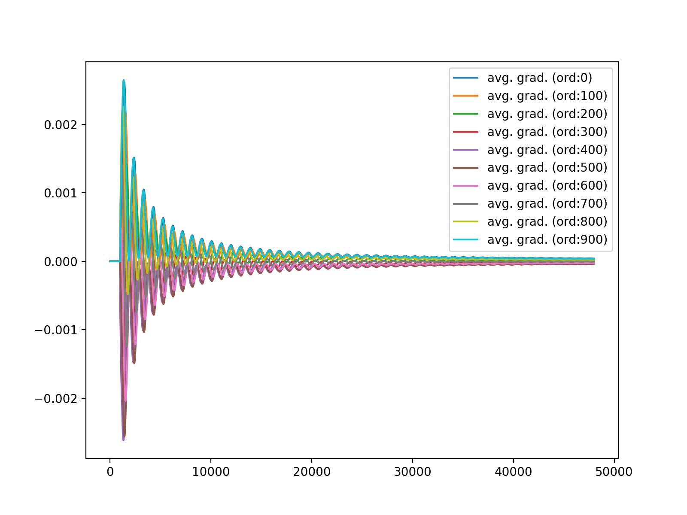

いろいろなTODO
優先度が大きい順に。
- 残差勾配 \(\mathrm{E}[\varepsilon(n) x(n - m)]\) の挙動観察をすべし。\(m\) が大きいときは無視できるのでは？
- なお、長時間平均値は0に収束していることを見た。
- → 確かめるべし。\(m\) をずらした時の平均値の様子を見る。どこかで影響が小さくなって打ち切れるはず。
- ガチャガチャ弄ってるってるけど示唆があんまりない。
- 低次（〜10）の係数は大きく変動する傾向。しかし、次に述べるピッチなどに影響しているのか、全てに当てはまる傾向ではない。
- \(\mathrm{E}[\varepsilon(n) x(n - m)]\) は \(m\) を大きくすれば単調減少するわけではない。音源依存で傾向が異なる。ピッチ？か何かに反応して大きくなる場合がある。
- 同一発音区間では、フィルタ係数の符号は同一になる傾向が見られる。単一のsin波を等価させたときはわかりやすい。

440.0Hzのsin波に対する各タップの平均勾配変化

ボイス対する各タップの平均勾配変化

ピアノ演奏に対する各タップの平均勾配変化
- メッセージパッシング使えない？
- 何らかの確率モデル化をせよ、というふうに受け取った。
- AMP, Survay-Propagation（三村さん、樺島さん）がありえる。
- → AMP, Survay-Propagationについて調査すべし。
- 周波数領域に一旦飛ばすのはあり？
- ありだけど計算量が高い。圧縮率が上がるのであれば大アリ。
- 確率的PCAとか使えない？辞書は小さくて済む。
- 線形ダイナミクスにより上手く定式化できない？
- 出す学会については HND 先生に聞くこと。
- 相談する機会はどこかで絶対に必要。
優先度低
- 著作権処理済み音源データベースについて相談
- → 自分で情報をまとめて、申し込んでいいかというところまで進めるべし。
- RWC 研究用音楽データベース: 音楽ジャンルデータベースと楽器音データベース
- RWC研究用音楽データベース
- → 進めた。動けるようになったら書類をまとめていく。
- Donohoさんなどが圧縮センシングの文脈で既にやりきってない？
- ありえる。調査すべし。
- → ライス大学では成果をすべて公開しているから見るだけ見たほうが良い。
- → http://dsp.rice.edu/cs/ を見よ。
- Compressed sensing block MAP-LMS adaptive filter for sparse channel estimation and a bayesian Cramer-Rao bound 残差はガウス分布としてるけどクラメル-ラオ下限との絡みを述べている。何か重要そう。
- Bayesian Compressive Sensing Using Laplace Priors これもパラメータの事前分布にラプラス分布を導入してベイズ推定するもの。残差ではないはず。
- 「L1」, 「Laplace」, 「residual」, 「lossless」で検索したけどスパース解を求めるものばかり。今のところはセーフ？
- → 継続して調査はする。
分散行列、ヘッセ行列、フィッシャー情報行列、自然勾配
- ガウス分布の最尤推定で、分散行列の逆行列はフィッシャー情報行列に一致する
- お？じゃあラプラス分布は？
- 絶対値関数入ってるけど、NNのデルタ則を導くときみたいに連続関数で近似して微分して後で極限取るみたいなのはできる。式変形チャレンジしてみるべし。符号関数はシグモイド関数で近似できる。後で温度パラメータの極限を取る。